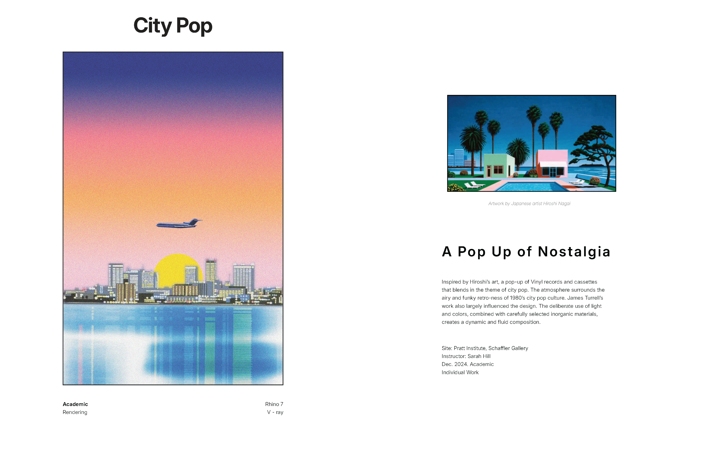
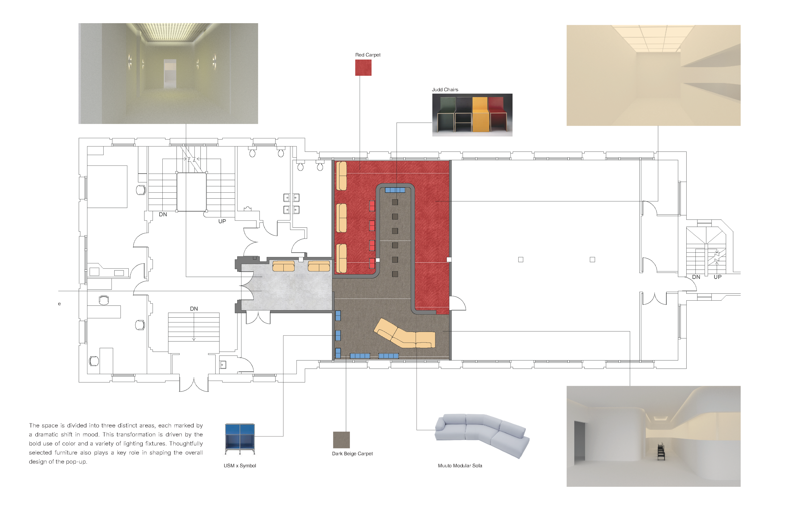

← Back
City Pop
Academic
City Pop translates the visual and musical atmosphere of late twentieth-century Japanese popular culture into an immersive interior. Saturated red and blue surfaces, reflective metal, luminous ceiling panels, graphic furnishings, and carefully framed media create a layered environment for listening, browsing, and gathering. The project uses color, light, and material contrast to balance nostalgia with a contemporary spatial identity.


